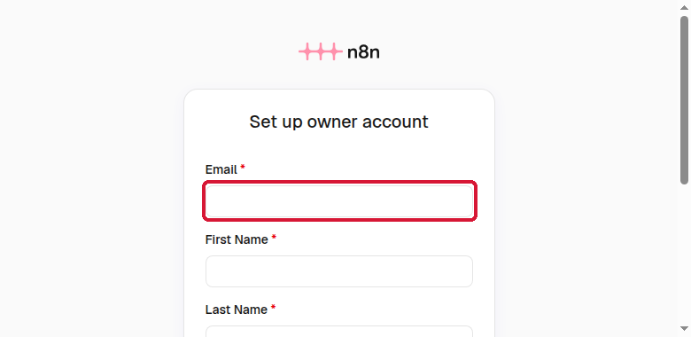
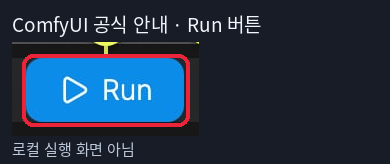
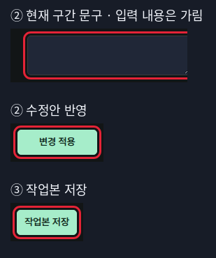
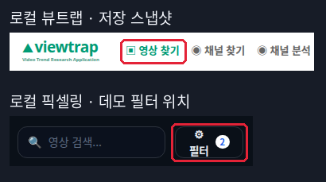
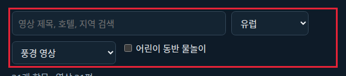
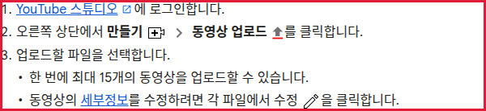
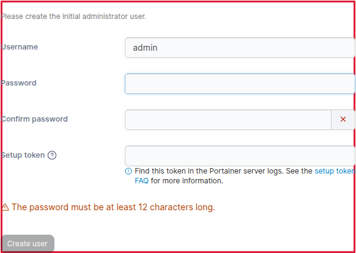
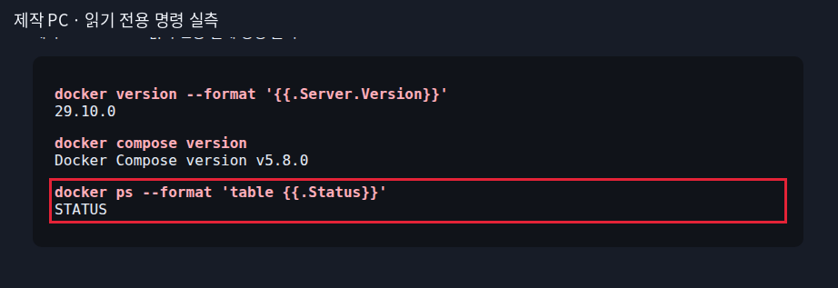

전자책 · 주식/ETF 차트 교육 · 홈페이지 · 판매 자료
📂 사업 자료 서랍 전체 열기 ↗크게 인스타 · 국뽕·해외반응 · 기타(유튜브 분석) 세 묶음입니다. 새 폴더가 올라오면 맨 아래 "분류 전"에 자동으로 나타납니다.
자료조사부터 편집까지, 필요한 메뉴를 열어 작업하세요. 이 페이지는 공개 안내서이며 작업 실행·서버 접속·게시를 대신하지 않습니다.
조사·대본 → 이미지·영상·음성 → 사람 편집·검수. 뷰트랩·픽셀링과 여행 자료는 소재를 찾을 때, Docker는 제작 PC가 응답하지 않을 때 보세요.
확인 기준: 2026-11-25 KST · 페이지 응답과 실제 작업 성공을 구분합니다. 제작 PC 전용 링크는 비공개 안내에서 열고, 휴대폰에서 제작 PC의 로컬 주소를 그대로 열지 마세요.
공개 자료를 모아 출처 목록과 한국어 대본 초안을 만드는 단계입니다. 자동 게시와 분리합니다.
제작 PC Chrome → 비공개 안내의 n8n 실습 주소 → 처음이면 Set up owner account. 화면의 빨간 표시는 첫 입력란입니다. 기존 운영 계정이나 API 자격증명을 사용하지 않습니다.

OFFLINE DEMO - Radar low view cases → Editor. 실습 입력은 미리 들어 있으므로 키나 외부 URL을 입력하지 않습니다.Compare RAW with separate Library gate → Output → Table. RAW와 Library가 별도입니다. 예시 380조회는 RAW에 남고, Library는 조회수 자체가 아닌 샘플 점수로 구분합니다.실습은 마지막 노드의 RAW/Library 판단 표가 결과입니다. 대본은 선택한 원문별 출처와 초안이 있어야 완료이며, 실행 성공 표시만으로 대본이 완성된 것은 아닙니다.
편집기가 안 열리면 Docker 상태를 먼저 봅니다. 노드가 실패하면 첫 실패 노드의 입력, 연결 상태, 호출 한도, 결과 컬럼을 확인하세요. 인증 값은 자격증명 화면 밖으로 복사하지 않습니다.
주제: [주제]
조사 범위: [기간·지역], 확인할 링크: [공개 URL]
공개 출처별 매체·기사명·날짜·URL·확인 사실을 표로 정리해 줘. 사실과 해석을 나누고 확인되지 않은 내용은 미확인으로 남겨. 근거가 있는 내용만으로 [길이] 한국어 구어체 대본과 첫 3초 훅 2안을 만들어. 게시하거나 원본을 수정하지 마.실습용 n8n 초기 화면은 제작 PC에서 열렸습니다. 샘플 결과는 별도 Docker 실행 기록으로 확인했습니다. 운영 워크플로, 계정 설정 이후 Editor, 운영 번역·대본 실행은 이번에 검증하지 않았습니다.
기존 개발 가이드 바로 열기 (운영 실행 주소 아님)
확정 대본을 PNG 이미지, MP4 장면, WAV 나레이션으로 나눕니다. 실제 WAV 길이를 기준으로 컷과 SRT를 맞춥니다.
제작 PC → ComfyUI의 승인된 이미지·영상 워크플로 [3] ComfyUI 안내 바로 열기. 음성은 로컬 Qwen3-TTS 등 승인된 별도 실행 환경 [4] Qwen3-TTS 안내 바로 열기에서 만듭니다. 공개 페이지에는 내부 접속 정보가 없습니다.

PNG를 열고, MP4에 영상이 재생되는지 확인하고, WAV 길이와 발음을 듣습니다. 첫 장면의 WAV 길이와 SRT 구간을 비교합니다.
ComfyUI가 응답하지 않으면 해당 서비스 상태, 모델·노드 누락, GPU 메모리를 확인합니다. TTS는 모델과 실행 환경을 구분해 확인하고, 파일이 나와도 숫자 누락은 직접 듣습니다. 기존 작업을 강제 종료하지 않습니다.
확정 대본: [대본]
첫 장면만 작업한다. 9:16 이미지 프롬프트(텍스트·로고 없음), 시작 이미지 기반 짧은 영상 프롬프트(카메라 동작 1개), 한국어 TTS용 문장(숫자·단위 읽기 표기), SRT 초안을 분리해 줘. 실제 WAV를 받은 뒤 길이와 자막 타임코드를 맞추고, 새 파일로 저장해. 생성하지 않은 산출물은 미생성으로 표시해.제작 PC의 ComfyUI와 Qwen3-TTS 웹 포트는 응답하지 않았습니다. 기존 PNG·MP4·WAV 확인은 새 생성 성공이 아닙니다. MiniMax H3의 컨테이너 내부 주소를 브라우저용 링크로 제공하지 않습니다.
기존 EP06 편집실에서 자막을 고치고 원본/수정안을 비교합니다. 조사·초벌 합성은 n8n, 문구·컷 결정과 최종 검수는 HumanTouch로 나눕니다. 두 서비스 간 직접 호출은 확인되지 않아 파일을 수동으로 넘기는 기준입니다.
제작 PC → 이미 사용 중인 HumanTouch Studio → EP06 자막 편집실. 실행이 필요하면 기존 로컬 RUN_V2 안내를 사용합니다. P1A와 v2 설계서는 같은 완료 상태가 아닙니다.

미리보기에서 수정안이 보이고, 서버 저장 후 새 버전 ID와 SRT·스타일 정보가 생겨야 합니다. 다른 작업에서 자막을 이어 보려면 SRT와 스타일 JSON을 골라 두 파일 복원을 사용합니다. 컷 결정 JSON이나 미리보기만 있으면 최종 MP4 완료가 아닙니다.
작업본 저장 버튼이 비활성이라면 로컬 서버로 열었는지 확인하세요. 영상 미응답은 기존 볼륨 연결과 매니페스트·원본 영상부터 확인합니다. 원본 대신 새 리비전을 남기고 편집 전후를 비교합니다.
이 영상의 수정 후보를 타임코드 | 원문 | 수정안 | 변경 이유로 정리해 줘. 말뜻을 바꾸지 말고 불확실한 청취는 표시해. 컷 삭제는 후보로만 제안하고, 창작자 확인 전 삭제·렌더·게시하지 마. 승인된 수정만 새 SRT와 스타일 파일로 분리해 줘.과거 검수에서는 편집 페이지 200·영상 범위 읽기 206이었으나 현재 제작 PC의 기존 편집 주소는 연결 거부입니다. 오늘 편집·저장·렌더는 실행하지 않았고, n8n과 직접 연동된 것으로 보지 않습니다.
키워드별 영상과 채널을 비교해 소재 후보를 고릅니다. 두 도구의 수치는 정의가 다를 수 있으므로 따로 기록합니다.
외부 서비스: PC Chrome에서 뷰트랩 [5] → 영상 찾기 또는 채널 찾기. 픽셀링 [6] → 워크스페이스. 기존 로컬 작업본: 뷰트랩은 영상 찾기 → 필터 → 표 보기, 픽셀링은 트렌딩 채널 → 트렌딩 카테고리 → 급상승 리스트업을 확인합니다. 로컬 실행 주소는 별도 안내에서 확인하세요.

검색 결과와 적용 필터가 보이고, 확인 시각과 단위가 있는 후보표가 나옵니다. 도구 수치와 공개 영상에서 직접 확인한 수치를 구분합니다.
비어 있으면 로그인 상태, 플랜 제한, 검색어 표기, 지역·기간 조건을 확인하세요. 빈 칸은 0으로 바꾸지 말고, 사이트가 열려도 자동 연결 성공으로 판단하지 않습니다.
키워드 [키워드], 지역 [지역], 기간 [기간]에 대해 내가 제공한 영상 데이터를 비교해 줘. URL·게시일·조회수·측정시각·관찰된 훅·독자적인 주제 아이디어를 표로 써. 플랫폼 추정치와 실측을 분리하고 누락은 미확인으로 표시해.공개 웹 앱 두 곳의 진입을 확인했습니다. 별도 재가동 조사에서 로컬 뷰트랩 작업본의 저장 스냅샷 보기·필터와 로컬 픽셀링의 복제 DB 조회를 확인한 뒤 시험 서버를 종료했습니다. 스냅샷 조회는 최신 데이터 수집이 아닙니다. 실계정 로그인·결제·n8n 자동 연결은 검증하지 않았습니다.
기존 여행 라이브러리에서 세로 영상 레퍼런스를 고르고, 장소 정보와 AI 연출을 구분해 새 쇼츠를 기획합니다.
기존 Insta → 여행 영상과 호텔 예약 링크 [7]. 별도 여행 대시보드를 만들지 않았습니다.

선택한 조건의 카드가 보이고 MP4를 확인할 수 있습니다. 생성한 쇼츠는 9:16 재생, 한글 자막, 출처·AI 고지를 검수한 영상만 납품합니다.
카드가 없으면 지역·형식 조건을 하나씩 풀어 보세요. 미디어가 안 열리면 브라우저와 카드의 MP4 링크를 확인합니다. 라이브러리 예약 링크와 검증된 제휴 추적을 혼동하지 않습니다.
장소 [지역·장소], 톤 [톤], 길이 [초]. 9:16 여행 쇼츠의 3초 훅, 컷별 길이·화면·한국어 나레이션·자막·환경음·출처 표를 만들어 줘. 실제 촬영과 AI 연출을 구분하고, 미확인 가격·영업시간·제휴 주장은 쓰지 마. 타인 영상이나 음악은 허가 없이 재사용하지 마.기존 라이브러리 HTTP 200과 베네치아 샘플 MP4 범위 응답 HTTP 206을 확인했습니다. 새 쇼츠 생성·게시나 예약 링크의 제휴 추적은 확인하지 않았습니다.
▶ YouTube Studio 바로 열기 · 공식 업로드 도움말

제공한 최종 MP4 정보와 대본만 보고 제목 3개, 설명 초안, 출처·저작권·광고·AI 고지 확인표를 작성해 줘. 모르는 값은 미확인으로 남겨. 업로드·예약·공개는 하지 마.제작 PC에서 Studio 링크가 로그인으로 연결되는 것을 확인했습니다. 로그인 후 버튼 캡처·업로드·게시 검증은 하지 않았습니다.
Docker Engine 동작과 컨테이너 실행 상태를 나눠 확인합니다. 이 페이지는 실시간 상태판이 아니며, 서비스 시작·재시작을 하지 않습니다.
제작 Ubuntu PC → 앱 메뉴에서 터미널 검색 또는 Ctrl+Alt+T. Docker Engine 아이콘은 상태를 출력하지 서버를 켜지 않습니다. 컨테이너 화면을 보려면 제작 PC의 비공개 안내에서 Portainer를 열고, 설정·로그인 이후 Environments → local → Containers로 이동합니다. 이번에는 첫 화면과 상태 API만 확인했습니다.


docker version --format '{{.Server.Version}}'
docker compose version
docker ps
docker ps -aEngine 버전과 Compose 버전이 표시됩니다. 컨테이너 목록이 비어 있어도 명령이 정상 종료됐다면 Engine은 응답한 것입니다. 이때는 실행 중 컨테이너가 없다는 뜻입니다. [8]
Cannot connect 또는 permission denied라면 Docker context, 데몬 상태, 본인 접근 권한을 확인하세요. 실행 목록이 비어 있으면 docker ps -a로 종료·생성 상태까지 확인할 수 있습니다. 권한 변경이나 재시작은 이 절차에 포함하지 않습니다.
내가 제공한 Docker Engine/Compose 버전과 컨테이너 상태만 읽기 전용으로 진단해 줘. 데몬 정상과 컨테이너 실행 여부를 구분하고, 막힌 경우 안전한 확인 명령만 제안해. 비밀번호·API 키·내부 주소·전체 로그는 요구하지 말고 서비스는 시작·중지·재시작하지 마.제작 PC에서 Docker Engine 29.10.0, Compose v5.8.0, 데몬 active 상태와 실습 n8n·Portainer 실행을 확인했습니다. 이 스냅샷은 별도 서버나 재부팅 후 상태를 보장하지 않습니다.
아웃라인, 제목·썸네일, 대본, 2배속 MP3를 왼쪽 메뉴 하나에서 엽니다.
대본·SNS·투자·영상개발 팩 + 인스타 계정 160개 원문 분석 + 불러쓰기 가이드. 비공개 저장소(로그인 필요).
🧠 공통기억 허브 바로가기 (비공개)표로 정리된 대시보드 · 팩 목록 · 무엇이 어디 있는지⭐ 불러쓰기 가이드Claude Code·Codex에서 복사해 쓰는 명령 모음📋 인스타 계정 목록 160개인스타툰·카드뉴스·릴스·한장형별 · 계정 링크📊 공통 시트SNS·인스타 팩 × 인스타 실측위쪽일수록 새것·핵심. 썸네일 갤러리·뷰어는 왼쪽 메뉴로 이동합니다.
🖼 인스타 AI 인플루언서 연구 허브 (왼쪽 메뉴)썸네일 갤러리 1,070개(가로 2~10열, 빨간 조회수) · 분야별 TOP60 · 개발 실행 가이드(n8n·Qwen·Aside) · CSV·MD 문서🔥 인스타 카드뉴스·릴스 벤치마크 뷰어왼쪽 메뉴 · 3~10열 바둑판 · 날짜/좋아요/댓글/조회수 정렬 · 분야별(AI·지원금/주식·경제/부동산/릴스/일본 한글번역)🖼 인스타 썸네일 이미지 모음인스타 분야별 상위 게시물 썸네일 그리드 (왼쪽 메뉴)🖼 인스타 썸네일 갤러리 (미리보기 그리드)🧩 카드뉴스 썸네일 · 캐릭터 비교레퍼런스 vs 내 캐릭터 결과 · 이미지 갤러리 36장 · 제작규칙 15개 (왼쪽 메뉴)💸 저관여 AI 사업 TOP10 · 원화 실수익 가정 계산기한미일 의료 콘텐츠📊 인스타 벤치마킹 600건 + 20개 분야 67일 계획기존 전략🌸 4계정 AI 콘텐츠 공장Codex 이미지 생성 + Aside 업로드 준비 + 14일 70편📈 전략 벤치마크 (AI 영상·페이스리스 순위)📝 HERMES 10대본 참고보드🗞 카드뉴스 미리보기 A~H🗞 카드뉴스 TOP5🌐 해외 프롬프트 시트📅 20일 플랜유튜브 국뽕 채널 연구, 중국 SNS 한국 반응, 외국 반응 분석
🇰🇷 NEW V6 · By GPT 국뽕 해외반응 7분 대본 2편외국인 반응 40% + 나레이션 60% · 4초 컷 × 105개 · 1:1 SEMANTIC JUDGE · 가변 왼쪽 메뉴🇰🇷 NEW 외국인이 본 한국 V5 · 10개 주제 + 10분 대본 2편실제 중국인 반응 우선 · 대본별 개별 페이지 · 60행 편집표 · 영상 원본 위치🎙️ 해외 평론가·방송·전문가 한국/일본 반응실제 링크 후보 16개 · 기존 18개 분야 · 칭찬/비판 분류 · Aside 단계별 수집 프롬프트🌸 해외반응 × 국뽕 유튜브 통합 연구 허브자료 찾기 · 급등 채널 · 장수 채널 · TOP1 편집 · 저작권 · 신규 키워드 (왼쪽 분류 메뉴 + 오른쪽 원본 본문)🌿 국뽕 유튜브 리서치 허브 (왼쪽 메뉴)급등·장수 채널 · 저작권 · 대본·편집 분석 · 프롬프트 · 통합 자료 표(CSV) · 분석 문서(MD)🇨🇳 국뽕 해외반응 (중국 SNS)샤오홍슈·빌리빌리 한국 반응 DB · 댓글·자막 번역 (왼쪽 메뉴)kukppong-top1-editing-20261108kukppong-copyright-prompt-20261108kukppong-longrun-audit-20261108youtube-kukppong-rising-20261108글로벌한국반응_국뽕영상_분석국뽕_8분30초_영상분석